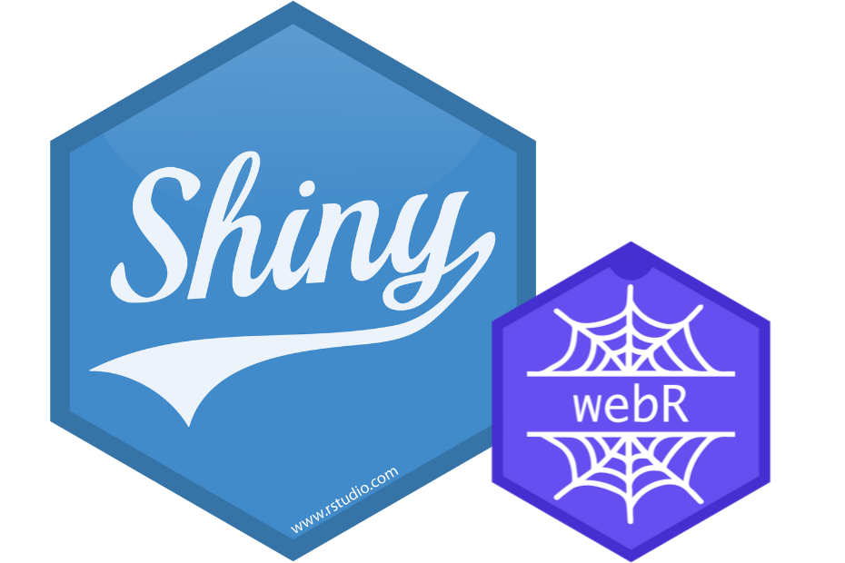
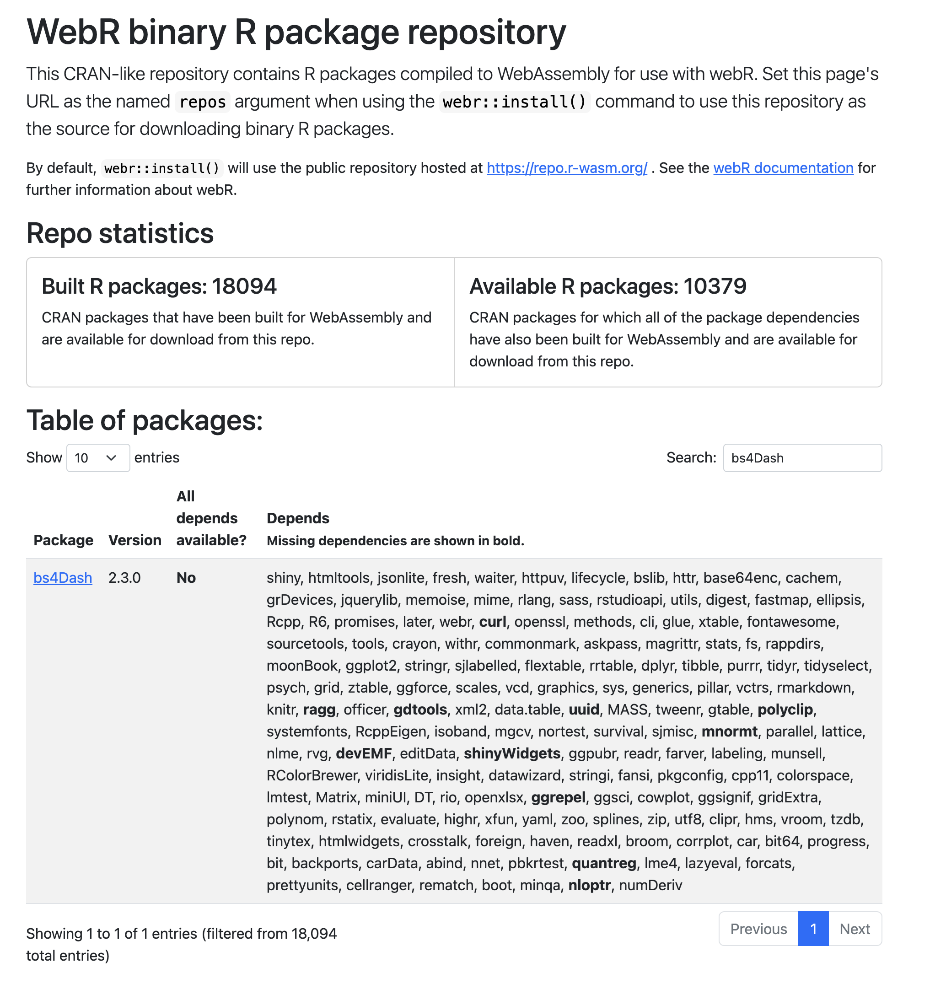

Introduction
webR allows to run R in the browser without any installation. That was one of the main motivation for its creator, George Stagg. The goal of this article is not to describe how webR was developed but what you can do with it.
Under the hood, webR is a JavaScript package which can be downloaded from npm (see it as a sort of CRAN for JS packages but fairly less strict regarding the content formatting). As you may imagine, one can’t use the existing CRAN repositories as they are not made for web assembly (wasm), which powers webR. Therefore, the webR team made it possible to compile your own packages, owing to a rather complex toolchain involving Emscripten. The currently provided repository is deployed at https://repo.r-wasm.org/.
shinylive is a JavaScript app (React) leveraging webR as well as Pyodide (See more here), a Python web browser version. In this article, we’ll only focus on the R side but keep in mind that the shinylive repository supports both. This repository allows to export a working shinylive app.
The resulting app may have different layouts:
- App only.
- App + header for sharing code.
- App + editor + terminal.
- App + examples… That’s the one you can access here.
A tiny R package called {shinylive} creates plug and play shiny apps for the browser by downloading all the necessary files from the shinylive repository. Be careful not to be confused!
A cool feature about the shinylive app is code sharing. The app code is compressed to base64 and shared via the url. Therefore, you can build your app in the editor and share it to others.
Customizing it
At the time of writing, 18094 packages are built for wasm (10379 also have their dependencies available), as shown below.

What if you want to install packages not available on https://repo.r-wasm.org/? You’d have to compile your own packages as described earlier:
- Build webR and all the system libraries.
- Build this repository and add your packages to the existing
https://github.com/r-wasm/webr-repo/blob/main/repo-packageslist. Note that in theMakefileyou’ll have to give the link to the webR installation by passingWEBR_ROOT=<WEBR_PATH>.
The first step is really not straightforward.
I was able to compile a customized repository which powers my own shinylive app. I had to slightly change the code to remove the Python support, as it was not necessary.
Usage examples
{pkgdown}+ shinylive: https://github.com/DivadNojnarg/shinylivePkgDown.- shinylive + quarto: have a shiny app without having to go back and forth between windows.
Embedded app
Below is an embedded R shinylive app running in a separate server hosted on Netlify. The iframe is included in a {bslib} card.
Embedded app + editor
An embedded shinylive app editor. User can share the code. Note: the plot won’t likely show on smaller screen leading to an error in the R console.
shinylive Quarto extension
Within a Quarto document
Below is a simple shiny app powered by the shinylive extension.
To get it working you must:
Install the shinylive quarto extension, run within your project:
quarto add quarto-ext/shinyliveEdit
index.qmdby passing the appropriate filter:--- ... other options ... filters: - shinylive ---Create the app code:
```{shinylive-r} #| standalone: true #| components: [editor, viewer] #| column: screen-inset-shaded library("shiny") ui <- fluidPage( numericInput("obs", "Number of observations:", min = 0, max = 1000, value = 500 ), plotOutput("distPlot") ) # Server logic server <- function(input, output) { output$distPlot <- renderPlot({ hist(rnorm(input$obs)) }) } shinyApp(ui, server) ```
#| standalone: true
#| components: [editor, viewer]
#| column: screen-inset-shaded
library("shiny")
ui <- fluidPage(
numericInput("obs", "Number of observations:",
min = 0, max = 1000, value = 500
),
plotOutput("distPlot")
)
# Server logic
server <- function(input, output) {
output$distPlot <- renderPlot({
hist(rnorm(input$obs))
})
}
shinyApp(ui, server)Quarto revealjs slides
Below is a simple shiny app embedded in a quarto revealjs presentation. The process is the same as described above, except that the index.qmd file to change is the one from the Quarto slides.
The result is shown below. As you can see, there is currently a layout issue, as there is an offset in the editor pane.
Limitations
Currently, there are few limitations:
- Have to install all packages on app load, which takes some time for R. It will be fixed soon.
- Necessary to have your own CRAN-like for wasm at some point. The webR team won’t be able to compile any single package on request.
- Few R functions don’t work well.
- Data are available in the browser. Not suitable for clinical apps in the pharma world, except if data are publicly made available on purpose (synthetic data …).
I personally think webR will be great for teaching and presentations. However, I don’t see it replacing the current infrastructures for more complex apps.